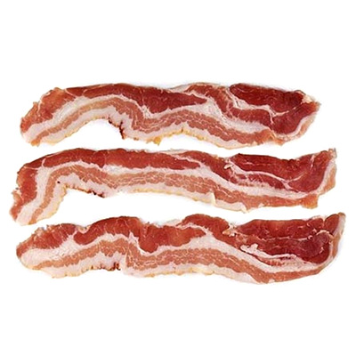

Meatspin ↻ Meat That Spins!
Bacon
Meat ball
Sausage
Steak
Broccoli
(V)
Disclaimer: this is not a real meat option. It is only provided to adhere to vegetarian's equal right on spinning food images.
